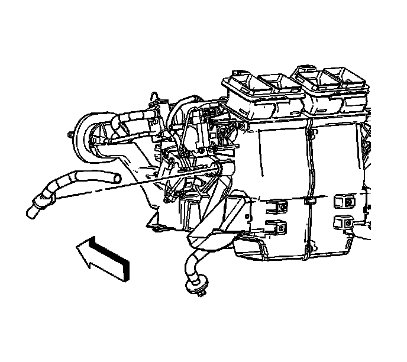
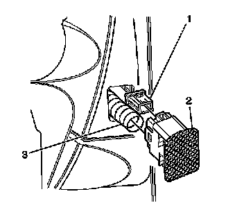

Inside Air Temperature Sensor Replacement (Left Hand Drive)
Inside Air Temperature Sensor Replacement (Left Hand Drive)
Removal Procedure

1. Remove the knee bolster. Refer to Knee Bolster Replacement (Left Hand Drive) (Service and Repair)Knee Bolster Replacement (Right Hand Drive) (Service and Repair) .
2. Disconnect the aspirator hose from the HVAC module.

3. Remove the inside air temperature sensor (2) from the I/P by gently prying outward.
4. Disconnect the inside air temperature sensor (2) electrical connection (1).
5. Disconnect the aspirator hose (3) from the inside temperature sensor (2).
6. Remove the inside air temperature sensor (2).
Installation Procedure
1. Install the inside air temperature sensor (2).
2. Connect the aspirator hose (3) to the inside temperature sensor (2).
3. Connect the inside air temperature sensor electrical connector (1).
Important: Assure that the foam seal tape is in place and covering the openings on the sides of the grille assembly (2).
4. Install the inside air temperature sensor (2) into the I/P.
5. Connect the aspirator hose to the HVAC module.
6. Install the knee bolster. Refer to Knee Bolster Replacement (Left Hand Drive) (Service and Repair)Knee Bolster Replacement (Right Hand Drive) (Service and Repair) .